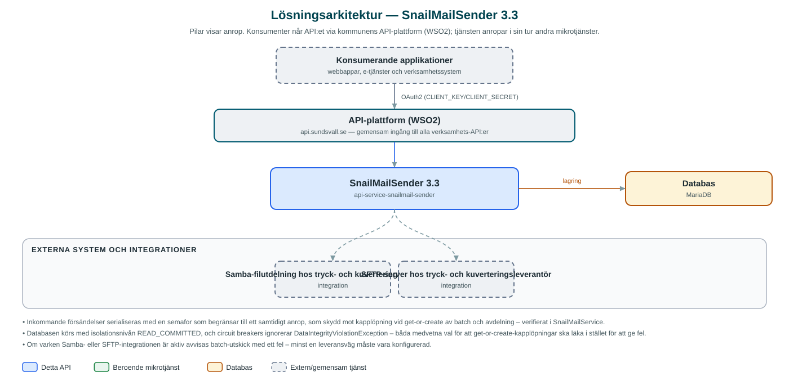

SnailMailSender
Samlar ihop fysiska brevförsändelser i batchar och lämnar över dem till tryck- och kuverteringsleverantör via filöverföring.
Om API:et
SnailMailSender hanterar kommunens utskick av fysiska brev. Applikationer – i praktiken främst Messaging-API:et, som faller tillbaka på fysisk post när digital leverans inte är möjlig – skickar in brevförsändelser med mottagaradress och bilagor (breven som PDF). Försändelserna samlas per batch och avdelning i en databas.
När en batch är komplett triggas utskicket, och tjänsten skriver då ut brevunderlaget till en filyta som tryck- och kuverteringsleverantören hämtar ifrån: en Samba-utdelning och/eller en SFTP-server, beroende på vilka integrationer som är aktiverade. Underlaget består av brevens PDF-filer tillsammans med csv-filer med mottagaruppgifter, sorterade i mappar per avdelning.
En schemalagd bevakning fångar upp batchar som av någon anledning aldrig triggats: batchar äldre än en konfigurerbar tid (standard en timme) skickas automatiskt. Efter lyckad överlämning raderas batchen ur databasen.
Det här gör API:et
- Ta emot brevförsändelser – Försändelser med mottagaradress, avdelning och PDF-bilagor registreras och köas i en batch per utskick.
- Skicka batch – Ett separat anrop triggar överlämning av en hel batch till leverantören, varefter batchen raderas ur databasen.
- Filleverans via Samba och/eller SFTP – Brevunderlag (PDF:er och csv-filer med mottagaruppgifter) skrivs till en Samba-utdelning och/eller SFTP-server; integrationerna kan aktiveras oberoende av varandra.
- Mappstruktur per avdelning – Underlaget sorteras i mappar per batch och avdelning, med konfigurerbart mappnamn, så att leverantören kan hantera olika brevtyper olika.
- Automatisk hantering av kvarglömda batchar – En schemalagd kontroll (var tionde minut) skickar batchar som inte triggats inom konfigurerad tid.
API-dokumentation
API:ets samtliga resurser, parametrar och datamodeller finns beskrivna i en OpenAPI-specifikation som är hämtad ur källkodsförrådet. Den kan utforskas interaktivt i Swagger UI eller laddas ner som YAML.
Teknisk dokumentation
Nedan beskrivs hur tjänsten är uppbyggd, vilka andra tjänster den anropar och vad som krävs för att driftsätta den. Informationen är härledd ur källkoden och dess konfiguration på GitHub.
Arkitektur

API:et är en mikrotjänst (Java 25, Spring Boot via kommunens gemensamma tjänsteplattform dept44 (8.0.8), byggd med Maven). Konsumenter når tjänsten via kommunens gemensamma API-plattform (WSO2) på api.sundsvall.se – tjänsten anropas aldrig direkt. Lagring: MariaDB med Flyway-migrationer; batchar, avdelningar och försändelser lagras tills batchen skickats och raderas därefter. Övriga integrationer som förekommer i koden: Samba-filutdelning hos tryck- och kuverteringsleverantör, SFTP-server hos tryck- och kuverteringsleverantör.
Teknikstack
- Språk: Java 25
- Ramverk: Spring Boot via kommunens gemensamma tjänsteplattform dept44 (8.0.8), byggd med Maven
- Databas: MariaDB med Flyway-migrationer; batchar, avdelningar och försändelser lagras tills batchen skickats och raderas därefter
- Övrigt: Spring Integration SFTP och JSch för SFTP, SMB-klient för Samba, ShedLock för schemaläggningslås, Resilience4j circuit breakers
Beroenden till andra mikrotjänster
Inga anrop till andra mikrotjänster hittades i källkodens konfiguration.
Konfiguration och driftsättning
- MariaDB-anslutning; databasschemat versionshanteras med Flyway
- Samba-integration: aktivering, adress till utdelning och inloggningsuppgifter (integration.samba)
- SFTP-integration: aktivering, server och inloggningsuppgifter (integration.sftp)
- Schemalagd bevakning av ohanterade batchar: cron, ålder innan batch anses övergiven samt ShedLock-låstider
- Anrop görs per kommun – municipalityId ingår i API-vägarna
Noterbart ur källkoden
- Inkommande försändelser serialiseras med en semafor som begränsar till ett samtidigt anrop, som skydd mot kapplöpning vid get-or-create av batch och avdelning – verifierat i SnailMailService.
- Databasen körs med isolationsnivån READ_COMMITTED, och circuit breakers ignorerar DataIntegrityViolationException – båda medvetna val för att get-or-create-kapplöpningar ska läka i stället för att ge fel.
- Om varken Samba- eller SFTP-integrationen är aktiv avvisas batch-utskick med ett fel – minst en leveransväg måste vara konfigurerad.
- README anger Citizen som beroende tjänst, men koden innehåller ingen Citizen-integration (endast Samba, SFTP och databas) – koden är sanningskällan.
- Bilagors base64-innehåll maskeras i anropsloggarna via Logbook-filter.
Källkod
Källkoden är öppen och finns hos Sundsvalls kommun på GitHub. I källkodsförrådet finns även instruktioner för att klona, konfigurera och starta tjänsten i egen miljö.